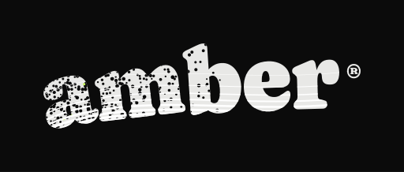
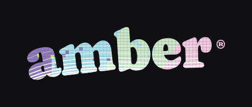
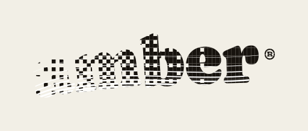
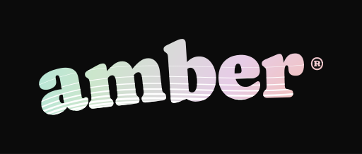
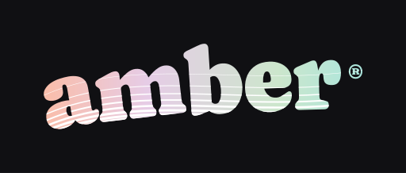
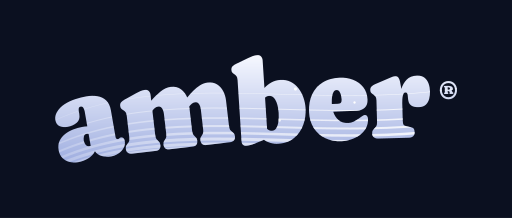
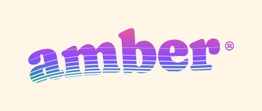

Every study keeps the original Caprasimo glyphs and nine white swoosh paths, widths and opacity. Only the ink treatment changes. Study plates clip the visible swoosh to the letter interiors; the reference preserves the original full-width swoosh.
00 · reference — production mark, original full-width swoosh

01 · unum stipple — perforated ink resolving to solid; canonical white swoosh inside the glyphs

02 · bit8 pixel — 8-bit bit-reduction — quantized ink and scanlines; canonical white swoosh

03 · dither4 press — 4-bit ordered dither — a halftone ramp inside the glyphs; canonical white swoosh

04 · signal orbit — motion — the radial ink roams inside the letters; the hairlines hold still

05 · hue flow — motion — palette cycling: the shipped ramp turns over inside the letters06 · zoetrope frames — sprite-sheet strip — ghost, ghost, live ink frames inside the glyphs; canonical white swoosh

07 · starlight — night-sky ink and stars inside the glyphs; canonical white swoosh

08 · prism rainbow — rainbow ink inside the glyphs; canonical white swoosh
10 · duotone riso — riso duotone — misregistration inside the glyphs; canonical white swoosh
avatar cuts — transparent ground
The sprite-workflow deliverable: the same locked font and hairlines with no ground plate — alpha-transparent SVGs cropped tight to the letterforms, shown at 128 / 64 / 32 px on a checker so the alpha channel is visible. Drop-in ready for favicon and avatar slots.